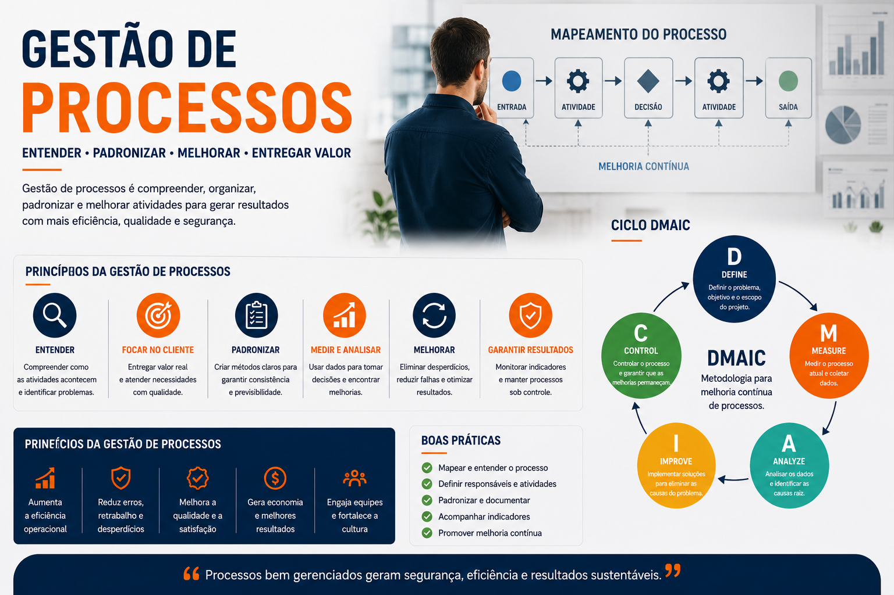

Duração
30 minutos
Nível
Básico
Área
Gestão
Tipo
Processos e melhoria contínua
Objetivo do treinamento
O objetivo deste treinamento é apresentar os conceitos básicos da gestão de processos, mostrando como atividades organizadas, padronização e melhoria contínua ajudam a gerar mais eficiência, qualidade e segurança operacional.
Visualizando processos e melhorias
A imagem abaixo representa conceitos importantes da gestão de processos, incluindo fluxo operacional, padronização, indicadores, melhoria contínua e o ciclo DMAIC.

O que é gestão de processos?
Gestão de processos significa entender, organizar, padronizar e melhorar atividades para gerar resultados mais previsíveis e eficientes.
Quando um processo é bem estruturado, a operação reduz erros, desperdícios e retrabalho.
Padronização
Definir métodos claros ajuda a manter qualidade e previsibilidade.
Análise
Processos precisam ser medidos para identificar problemas e oportunidades de melhoria.
Melhoria Contínua
Pequenas melhorias constantes geram grandes resultados ao longo do tempo.
Introdução ao DMAIC
O DMAIC é uma metodologia utilizada para melhoria contínua de processos, muito aplicada em Lean Six Sigma.
O nome DMAIC representa cinco etapas:
Define
Definir o problema e os objetivos.
Measure
Medir o processo e coletar dados.
Analyze
Identificar causas dos problemas.
Improve
Criar melhorias para eliminar falhas.
Control
Garantir que as melhorias permaneçam funcionando.